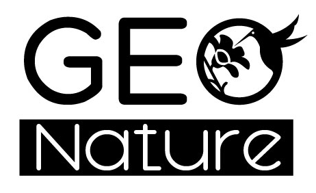
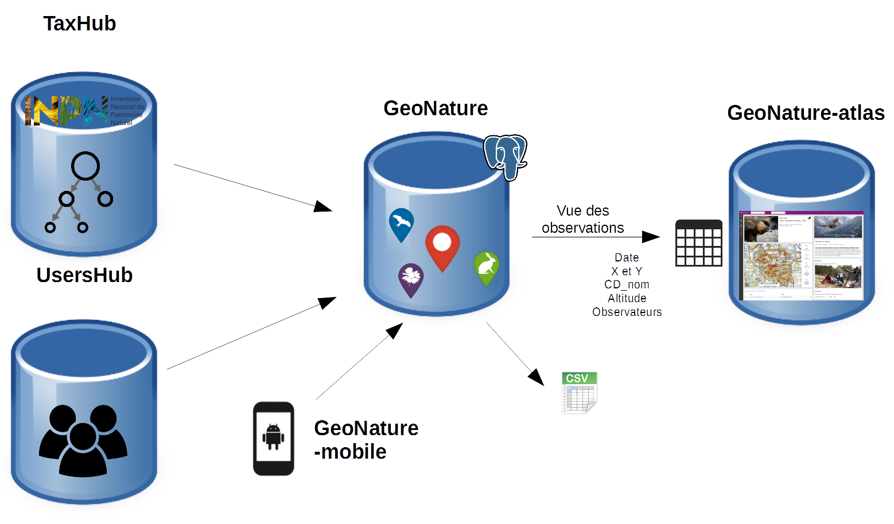

A propos

GeoNature comprend un ensemble d'outils développés par les parcs nationaux de France et disponibles sous licence libre.
Chaque outil peut être téléchargé et installé indépendamment : GeoNature (pour la saisie web, la consultation et l'export des données), Occtax-mobile (pour la saisie mobile dans Occtax), GeoNature-atlas (pour la diffusion des données), GeoNature-citizen (pour la collecte citoyenne ouverte de données), TaxHub (pour la gestion de la taxonomie à partir de Taxref), UsersHub (pour la gestion des utilisateurs et de leurs droits).

Il est aussi possible de déployer l'ensemble des outils à l'aide d'un script global et automatisé.
Pour en savoir plus, téléchargez la présentation simplifiée
ou la présentation détaillée et ses commentaires.
Vous pouvez aussi consulter toutes les présentations sur l'espace de ressources.

GeoNature permet de déployer un système d'informations complet pour la gestion des données Faune/Flore d'une structure, allant de :
- la gestion des référentiels (taxonomiques et utilisateurs),
- à la saisie web et mobile dans différents protocoles,
- à la gestion de leurs métadonnées,
- à l'intégration de données de partenaires,
- à l'export des données selon les formats attendus par chaque partenaires,
- à la synthétisation des données des différents protocoles sous forme de DEE,
- à la diffusion des données sur un portail web grand public.
GeoNature 2.0.0 est sorti! Pour en savoir plus.
C'est parti!{kind=link}
{kind=link}
{kind=link}
{kind=link}
{kind=link}
{kind=link}
{kind=link}
{kind=link}
{kind=link}